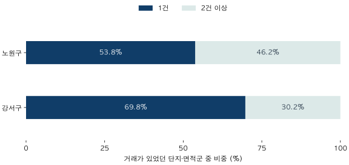

첫 집을 위한 가격 읽기 · 3 / 4
거래가 뜸한 아파트, 마지막 거래가격을 믿어도 될까?
2026년 6월 거래가 있었던 단지·면적군 중 한 건뿐인 묶음의 비중을 살펴봅니다. 마지막 실거래의 시점, 건수, 비교 조건을 함께 읽는 방법입니다.
분석 기간 · 2026년 6월 계약 | 보유 자료 스냅샷 생성 · 2026-10-04
관심 있는 아파트를 검색했는데 최근 거래가 한 건만 보입니다. 몇 달 전 금액을 지금 가격으로 봐도 될까요? 거래가 없다는 이유로 가격이 그대로라고 생각해도 될까요?
마지막 거래가격은 실제로 한 계약이 성사됐다는 기록입니다. 다만 그 한 건이 지금 내가 보려는 집의 조건과 얼마나 가까운지는 별도로 확인해야 합니다. 2편에서 거래 구성의 차이를 살폈다면, 이번에는 그 구성을 좁혔을 때 근거가 얼마나 남는지 보겠습니다.
1. 마지막 거래가격은 ‘마지막으로 관측한 계약’입니다
한 거래가 8억 원에 이뤄졌다는 기록은 그 계약의 금액을 알려줍니다. 같은 면적의 다른 층도 8억 원에 거래될지, 다음 매수자가 같은 금액을 낼지는 그 기록 하나로 알 수 없습니다. 집의 상태나 매수·매도자의 사정도 숫자만으로는 모두 드러나지 않습니다.
여기에 시간이 지나면 또 다른 차이가 생깁니다. 마지막 계약 이후 시장과 주변 거래가 바뀌었을 수 있기 때문입니다. 새 거래가 없다는 것은 새 관측이 없다는 뜻이지, 가격이 변하지 않았다는 관측이 아닙니다.
6월 말에 확인한 두 후보 중 A의 마지막 계약은 6월, B의 마지막 계약은 2월이라고 해보겠습니다. 두 금액이 같아도 같은 시점의 비교는 아닙니다. A의 한 건도 조건이 다르면 충분한 근거가 되지 않고, B의 금액도 오래됐다는 이유만으로 틀린 기록이 되지는 않습니다. 금액 옆에 각각의 계약일과 확인일을 적는 것이 먼저입니다.
2. 구 전체에 거래가 많아도, 단지·면적군에는 한 건일 수 있습니다
1편과 같은 2026년 6월의 두 면적군을 이번에는 단지 × 전용면적군으로 나눴습니다. 한 단지에서 17·18평형과 25·26평형이 모두 거래됐다면 서로 다른 두 묶음으로 셉니다. 이는 단지 수와 다른 단위입니다.
분모는 그달 적격 거래가 한 건 이상 있었던 묶음입니다. 거래가 전혀 없던 묶음의 수는 이번 계산에 넣지 않았습니다. 따라서 아래 결과는 ‘전체 단지 중 거래가 드문 비율’이나 ‘거래가 없는 아파트 비율’이 아닙니다.

두 전용면적군 한정 · 각 막대의 분모는 거래가 있었던 단지·면적군 수 · 국토교통부 실거래 자료를 파파펭귄이 집계. 개별 거래나 단지명은 표시하지 않았습니다.
| 지역 | 적격 거래 | 거래가 있었던 묶음 | 1건인 묶음 | 2건 이상인 묶음 |
|---|---|---|---|---|
| 노원구 | 301건 | 156개 | 84개53.8% | 72개 |
| 강서구 | 188건 | 129개 | 90개69.8% | 39개 |
노원구는 156개 묶음 중 84개, 강서구는 129개 중 90개가 한 건뿐이었습니다. 구 단위로 보면 수백 건 또는 백여 건의 거래가 있지만, 특정 단지의 특정 면적군으로 들어가면 그달 한 건만 남는 경우가 있습니다.
이 표에서 강서구의 한 건 비중이 더 높았다는 것은 관측한 사실입니다. 하지만 이를 “강서구의 집이 더 팔기 어렵다”는 결론으로 바꿀 수는 없습니다. 전체 주택 수, 매물 수, 매도에 걸린 기간을 계산하지 않았고, 두 지역의 단지 구성도 다릅니다. 이 표는 근거의 분포를 보여주며 매도 난이도를 측정하지 않습니다.
3. 한 건을 볼 때는 시점·건수·조건을 나눠 확인합니다
- 시점: 언제 계약했나?
- 화면을 조회한 날과 계약일을 나눠 적습니다. 오래된 금액을 오늘의 거래금액처럼 읽지 않습니다. 최근 계약일수록 신고·정정으로 화면의 건수와 내용이 더 바뀔 수 있다는 점도 함께 확인합니다.
- 건수: 어느 기간에 몇 건인가?
- ‘최근 거래’라는 표현 대신 “6월에 같은 면적군 1건”처럼 기간을 붙입니다. 한 달 1건과 반년 1건은 다른 근거입니다. 전체 단지의 건수와 내가 보는 면적군의 건수도 구분합니다.
- 조건: 내가 볼 집과 무엇이 다른가?
- 전용면적, 층, 동, 방향, 수리 상태 등을 확인합니다. 자료로 알 수 없는 것은 미확인으로 남깁니다. 거래가 여러 건이어도 같은 조건이라고 자동으로 가정하지 않습니다.
한 건이면 평균과 중앙값은 그 한 금액과 같습니다. 이름을 바꿔도 근거가 늘지는 않습니다. 두 건 이상이라는 이유만으로 신뢰할 만한 가격이 보장되는 것도 아닙니다. 위 표에서 ‘2건 이상’은 건수 구분일 뿐, 안전하거나 충분하다는 등급이 아닙니다.
4. 거래를 더 모을수록 조건도 멀어질 수 있습니다
거래가 적다면 기간을 넓히거나 주변 단지를 함께 볼 수 있습니다. 대신 무엇을 더 섞었는지 기록해야 합니다. 비교 범위를 넓히는 일은 부족한 근거를 보완하는 방법이지, 차이를 없애는 방법은 아닙니다.
| 넓히는 범위 | 얻을 수 있는 것 | 함께 기록할 차이 |
|---|---|---|
| 계약 기간 | 같은 단지·면적의 과거 거래 | 계약 시점과 그 사이 시장 변화 |
| 면적 범위 | 같은 단지의 다른 면적 거래 | 면적·구조 차이와 총액 차이 |
| 주변 단지 | 가까운 지역의 추가 관측 | 연식·입지·단지 규모·상태 차이 |
비교표에는 가까운 조건의 관측과 참고용 관측을 나누어 적어보세요. 예를 들어 “같은 단지·같은 전용면적의 최근 계약”과 “옆 단지의 다른 면적 계약”을 같은 무게로 평균 내지 않는 것입니다.
이 글은 몇 개월이나 몇 건이면 충분하다는 공통 기준을 제시하지 않습니다. 질문과 시장 상황, 남아 있는 조건 차이에 따라 필요한 근거가 다릅니다. 범위를 넓혀도 설명하기 어려운 차이가 크다면, 숫자를 하나로 정리하기보다 확인이 더 필요하다고 표시하는 편이 정확합니다.
5. 금액 옆에 ‘근거 메모’ 한 줄을 남기세요
“마지막 계약은 ___년 ___월 ___일. ___개월 동안 같은 전용면적 조건의 거래 ___건. 층·상태 차이는 ___. 자료 확인일은 ___.”
칸이 채워지지 않는다면 값이 0이라는 뜻이 아니라 아직 확인하지 못했다는 뜻입니다. 특히 해당 기간에 거래가 없었다는 사실과, 검색 조건이나 자료 누락 때문에 거래를 못 찾았다는 상태를 구분해야 합니다.
- 마지막 거래의 계약일과 자료 확인일을 각각 적습니다.
- 동일한 조회 기간으로 후보 두 곳의 거래 수를 확인합니다.
- 같은 조건의 거래와 조건이 다른 참고 거래를 구분합니다.
- 거래가 적다는 이유만으로 상승·하락·매도 가능성을 단정하지 않습니다.
이 메모를 1편의 비교 조건, 2편의 통계 구분과 합치면 한 장의 후보 비교표가 됩니다. 마지막 편에서 직접 채워보겠습니다.
분석 방법과 출처 자세히 보기
자료와 분모
국토교통부 아파트 매매 실거래가 상세 자료의 2026년 6월 계약을 사용했습니다. 노원구·강서구에서 전용면적 기준 정수 17·18평형과 25·26평형을 선택했습니다. 1편과 동일한 거래 정제·면적 분류입니다. 2026년 9월 계약분까지 보유한 자료로 10월 4일 만든 스냅샷이며, 최초 정보 입수 시점은 알 수 없습니다.
내부의 통합 단지 식별자와 면적군으로 나누어 적격 계약 수를 세고, 이를 지역별 ‘1건’과 ‘2건 이상’으로 다시 합쳤습니다. 같은 단지가 두 면적군에 각각 들어갈 수 있습니다. 거래가 0건인 묶음은 분모에서 제외되며, 모집단 전체의 거래 발생률을 구한 것이 아닙니다.
검증과 공개 범위
조회용 관측과 정제 거래를 별도로 집계해 단지·면적군의 건수 분포를 대조했습니다. 선택한 거래에 단지 식별자가 비어 있는 경우가 없음을 확인했고, 두 건수 구간의 거래 합계는 1편의 지역별 두 면적군 건수 합계와 일치합니다.
각 공개 구간에는 10개 이상의 묶음과 10건 이상의 거래가 있습니다. 외부에는 구·월 단위 집계만 내보냅니다. ‘한 건인 묶음’의 수를 공개하는 것이며, 그 개별 거래의 가격·시점·단지 정보는 공개하지 않습니다. 공개 기준은 개인정보 노출을 줄이기 위한 조건이지 통계적 정확도의 보증이 아닙니다.
검증한 공개 집계값 내려받기 (JSON) · 그림 원본 · 실거래가 공개시스템

분석·집필: 파파펭귄 (Nobot Kang). 에이전트를 활용해 집계 검증과 초안 작성을 진행했습니다.
원자료 이용 조건: 공공데이터포털은 위 자료를 “이용허락범위 제한 없음”으로 안내합니다(2026-10-06 확인). 사이트의 글·그림 이용 조건과 원자료의 이용 조건은 별개입니다.